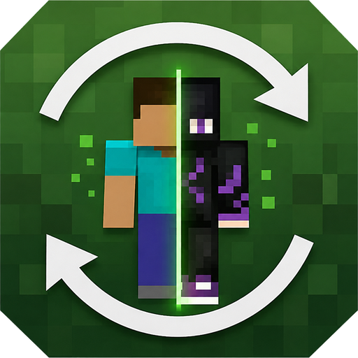

Seen by everyone
On a Simple Skin server the swap is relayed live. Anywhere else it goes through your Mojang profile, verified byte for byte before a rejoin.
Simple Skin puts a full skin wardrobe behind one key. Swap, steal, import and edit skins without ever restarting Minecraft — and unlike a plain skin changer, the swap actually reaches the other players on your server.

Click the picture to move on, use the arrows, or jump straight to a screen below.
Interface illustrations drawn from the mod's real layout and colours.
They repaint your own screen and stop there. Simple Skin goes the whole way to the other players.
On a Simple Skin server the swap is relayed live. Anywhere else it goes through your Mojang profile, verified byte for byte before a rejoin.
Equip from the library or a hotkey and the skin is on you in the same tick. No relaunch, no alt-tab to a website.
Copy a player standing next to you, or look up any username through Mojang's own API — no third-party scraping.
Remove the hat or jacket layer, transplant a head from another skin, or replace a colour. The original is never overwritten.
Put a PNG in config/simple-skin/import and it lands in your library on its own. No file dialog needed.
One key for a random skin from your wardrobe, or let it rotate on a timer while you play.
A client-side mod cannot tell someone else's game what to draw. Every other player asks the server, and the server asks Mojang exactly once — while you are logging in. Simple Skin takes the best route available.
If the server also runs Simple Skin, your client sends the skin over a plugin channel. The server validates it and relays it to every other Simple Skin client, which applies it immediately. No rejoin, no Mojang round-trip.
simple_skin:equip → server → simple_skin:wearing
On a vanilla server the skin is uploaded to your Minecraft profile. Simple Skin then downloads what Mojang is really serving and compares it byte for byte before reconnecting — rejoining too early would hand the server your previous skin.
upload → verify → rejoin
Only me keeps everything on your machine. Upload to profile uploads and verifies, then waits for you to press Rejoin. Upload + rejoin does the whole thing by itself. Offline or with an expired session, the skin still applies locally and the status line says so rather than pretending it worked.
One file, dropped in your mods folder. We'll list exactly what else it needs right after the download starts.